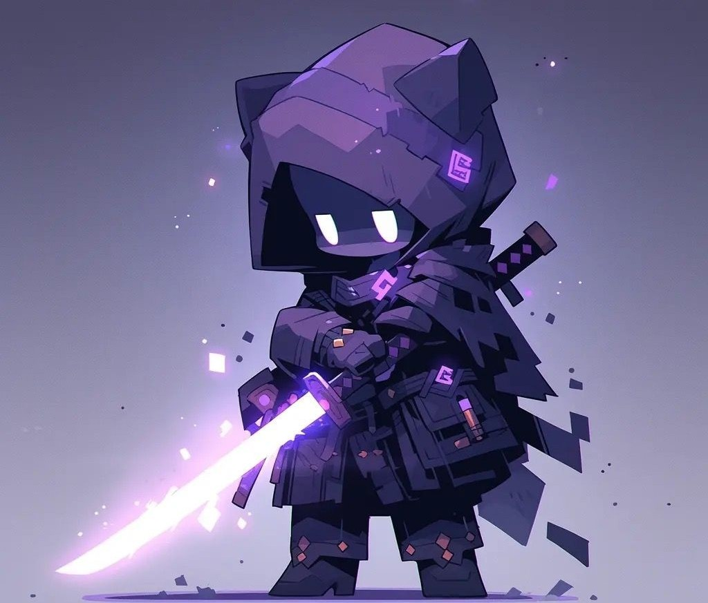

Software and data projects built with Python, SQL, and the web.
SQL • SQLite • Python • pandas • Matplotlib
Exploring a public Kaggle dataset of about 540 patient records to see which health and lifestyle factors are linked to PCOS, using SQL queries and pandas. Findings will be correlations, not medical conclusions.
Follow ProgressUI/UX Design • Interactive Web Build • Award Winner
Interactive web build awarded Best Beginner Build in the Programiz March Challenge and featured on the Wall of Inspiration for UI/UX design and originality.
View ProjectHTML • CSS • JavaScript • GitHub Pages
Responsive personal portfolio website showcasing my resume, skills, and projects, published with GitHub Pages.
View ProjectPython • Nested Loops • For Loops
Algorithmic Python program utilizing nested loops and loop control structures to process and extract secure sequence codes.
View Project
Python • Loop Control • String Formatting
Interactive Python terminal utility for generating customized character stats, attributes, and formatted profile descriptions.
View ProjectPython • While Loops • CLI
Interactive terminal game leveraging conditional logic and while loops to give players dynamic feedback on guesses.
View Project